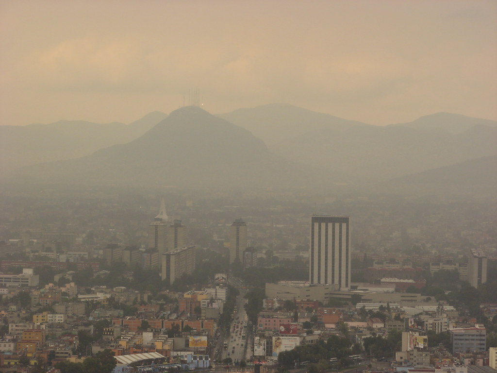

|
TIPOS DE CONTAMINACIÓN
La contaminación ambiental es uno de los problemas mas grandes que tenemos en la actualidad y de una u otra estamos incluidos como los causantes. La contaminación ambiental no solo son rios y bosques, existen diversos tipos de contaminación que consciente o inconscientemente aportamos a ella en el transcurso del dia.
Clases de Contaminación Ambiental:
Contaminación Hídrica
El agua es el elemento indispensable de todo ser vivo, tiene una infinidad de usos entre ellas están las cosechas, para cocinar o simplemente para beber, al igual que para los animales marinos que dependen totalmente de esta para poder sobrevivir.
La contaminación hídrica (contaminación del agua) es la presencia de agentes quimicos de una densidad con un porcentaje mayor a el elemento natural de tal manera que sea imposible el consumo o el uso de esta al que se habria podido dar en otras condiciones sin contaminantes de por medio.
Contaminación del Suelo
El suelo es la piel del planeta tierra lleno de arrugas y heridas causadas por la humanos o por la propia naturaleza a lo largo de toda la historia.
La contaminación del suelo se da cuando la concentración de los contaminantes en los suelos es tan alta que lo daña convirtiendolo en un peligro, esta contaminación es tan grave que se ha vuelto una amenaza en varios continentes como en Europa, Asia entre otros. Segun la Organización de las Naciones Unidas (ONU), la mayor organización internacional existente.
Contaminación Visual
La contaminación visual es el impedimento de la visualización de nuestro espacio alrededor como el hecho de no poder ver el paisaje o la naturaleza por culpa de diferentes motivos causados por el hombre en el ambiente al hacer uso de elementos que están en contra de la naturaleza y ponerlos en el espacio alrededor de una manera excesiva y muy desorganizadamente ocasionando esta situación y perturbe la visualización de los diferentes lugares.
Esta contaminación se puede dar en cualquier entorno, tanto en ambientes urbanos como en ambientes rurales, es una de las formas de contaminación que obligatoriamente necesita ser regulada por la ley.
Contaminación Térmica
La contaminación térmica es una de las formas en la que se va deteriorando el medio ambiente y el planeta tierra el cual se basa en una modificación de la temperatura de una manera que se vuelva perjudicial, el cambio puede ser cualquiera de las dos formas tanto una bajada como una subida afectando a el aire, el agua, la tierra y a todos los seres vivos.
Comunmente este tipo de cotaminación se da en ecosistemas acuáticos debido a que en el aire se puede dispersar mas fácilmente aunque tampoco se excluye, de alguna forma tambien lo afecta.
Contaminación Atmosférica
SIGUEME EN MIS REDES SOCIALES |
INSTAGRAM:https://www.instagram.com/the_planet_21/ |
PAGINA-FACEBOOK:https://www.facebook.com/The-Planet-100911662217260 |
CORREO G-MAIL::theplanetenvironment21@gmail.com |
La contaminación atmosférica es la presencia de diferentes sustancias o elementos en estado gaseoso que ocasionan un peligro o daño para los seres humanos y el medio ambiente en sí según el Ministerio de Agricultura y Pesca.
La contaminación atmosférica es de los problemas que como humanos enfrentamos para poder sobrevivir porque los niveles que hay de contaminación son tan demasiado altos consecuencia de diferentes factores que el planeta ya no es igual al de hace unos 100 años, con los años se ha dejado de ser un espacio calido, saludable a uno con muchos problemas en muchos aspectos.
Contaminación Acústica
La contaminación acústica se basa en la presencia de vibraciones y ruidos que causan molestia o daño a las personas ya sea para el desarrollo de sus actividades diarias o que sean causantes de efectos negativos para el medio ambiente.
Según la Organizacion Mundial de la Salud (OMS), la contaminación acústica es una de las que más problemas ocasiona en la salud. Aunque solo el hecho de hacer ruido no se considera contaminación, existen unas medidas que no se deben superar para no causar contaminación. Se vuelve dañino si pasa de 75 dB y causa dolor desde los 120dB por lo que se recomienda no pasar de los 65dB al día.
copyright 2021 mandanos un mensaje via email a theplanetenvironment21@gmail.com